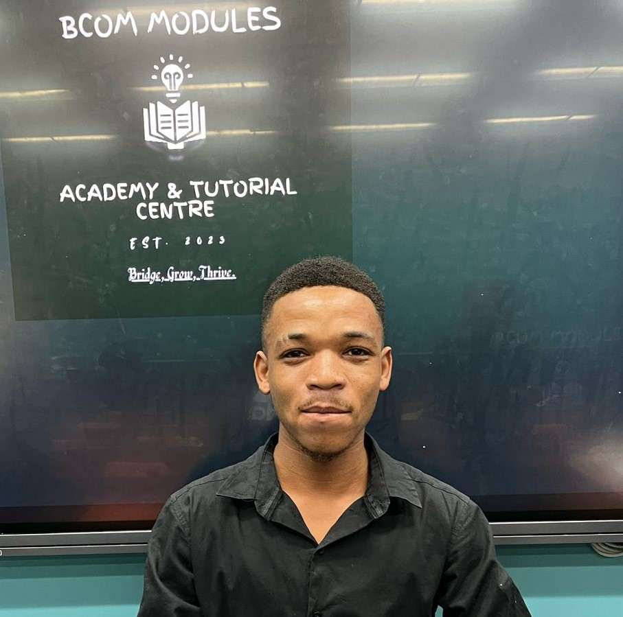

MEET THE TUTORS

Michael S. Mncina

Paul M. Mamabolo is a Bachelor of Commerce in Accounting student at the University of Johannesburg. With a strong passion in Finance and Costing, he has excelled in his studies, making him eligible to purport his knowledge to students. Paul does not aspire to make a living but to make a difference, he is the Co-Founder of BCAT Tuts, and currently serves as a tutor.
Michael & Paul have brilliantly served as tutors of the module since 2024, providing a track record of top students at UJ.